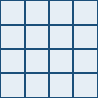
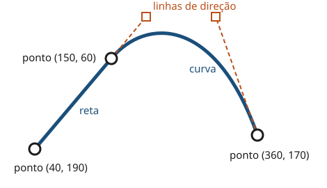

Por que uma imagem pesa, como ela perde qualidade e quem sente isso no site
Criar e preparar os elementos de mídia que compõem a interface de um site: imagens, logotipos, ícones, áudio e vídeo.
Editorar é deixar esse material pronto para publicar: recortar, tratar, converter e comprimir.
No site que vamos analisar hoje, uma única foto pesa 2,1 MB, quase 200 vezes o código da página. O técnico decide formato, tamanho e qualidade de cada mídia.
Plano de curso, UC07: objetivo geral. Livro, p. 13.
Estas máquinas voltam ao estado original quando reiniciam. Tudo o que for seu fica na sua nuvem ou no seu pendrive, nunca só no computador.
Base de estudo: o livro da matéria. Cada slide indica a página.
1. A mesma foto de 1600 × 1068 pixels. Qual arquivo fica mais pesado?
2. Um logotipo pequeno foi ampliado e ficou borrado. Por quê?
3. Um site só funciona com mouse. Quem é mais prejudicado?
"Meu site demora para abrir no celular. A foto do balcão está lá do jeito que saiu da câmera. Meu logotipo aparece com um quadrado branco em volta. E uma cliente não conseguiu chegar ao cardápio pelo teclado."
Cada queixa tem uma causa técnica: peso do arquivo, formato errado e falta de acessibilidade. Hoje você vai aprender a explicar, medir e corrigir cada uma.
Mais tarde, vamos abrir o site atual da cafeteria para encontrar esses problemas.
De onde vem o arquivo que o site precisa baixar
Mídia é tudo aquilo que pode transmitir informação ao usuário: revista, rádio, televisão, internet. A palavra vem do inglês media, os meios de comunicação.
| Analógica | Digital | |
|---|---|---|
| Como a informação existe | Em um meio físico: papel, disco de vinil | Em zeros e uns, os bits, lidos por um dispositivo |
| Comunicação | De um emissor para um receptor | Amplia a possibilidade de resposta, principalmente na internet |
| Vantagem | Não depende de aparelho para ser lida | Fácil de armazenar, copiar e distribuir |
| Na cafeteria | Cardápio impresso no balcão | Cardápio no site, com foto de cada item |
Livro, p. 29–30; som como medições: p. 87. Exemplos da cafeteria: nossos.
Conjunto de duas ou mais mídias para transmitir a mensagem de forma mais rica. É mais fácil lembrar de algo quando um texto vem junto de uma imagem ou de uma música.
O vídeo é o exemplo clássico: reúne texto, imagem, movimento e som ao mesmo tempo.
Hipertexto é o texto na web, com links que levam a outras páginas.
Hipermídia amplia a ideia: além do texto, inclui imagens, sons, vídeos e arquivos. A própria internet é o maior exemplo.
Livro, p. 30–32.
Pixel, resolução e o motivo de um arquivo pesar tanto
Uma imagem digital é uma grade de quadradinhos. Cada quadradinho é um pixel: o menor componente da imagem. Cada pixel tem uma só cor.
Essa cor é a mistura de três luzes: vermelho, verde e azul. É o padrão RGB, das iniciais em inglês (red, green, blue). A tela acende as três em intensidades diferentes para formar cada cor.
Vista de longe, a grade some e o olho enxerga uma foto contínua. Vista de perto, como ao lado, aparecem os quadradinhos.
Livro, p. 42.
A resolução de uma imagem diz quantos pixels ela tem na largura e na altura. Escreve-se largura × altura.
largura × altura
Foto do balcão: 1600 × 1068 = 1.708.800 pixels
1 megapixel = 1 milhão de pixels. A foto tem cerca de 1,7 megapixel.
As telas também têm resolução, pois também são grades de pixels: 1280 × 720, 1440 × 900, 1920 × 1080…
Por isso, uma foto de 1600 pixels de largura não cabe inteira em uma tela de 1280: o site precisa reduzi-la na exibição.
Uma câmera que faz fotos de 4000 × 3000 gera 4000 × 3000 = 12.000.000 pixels, ou 12 megapixels. Bem mais do que qualquer tela consegue mostrar de uma vez.
Livro, p. 42. A câmera de 4000 × 3000 é um exemplo nosso.

Ao dobrar a largura e a altura, a quantidade de pixels fica quatro vezes maior, porque 2 × 2 = 4.
| Resolução | Pixels |
|---|---|
| 400 × 267 | 106.800 |
| 800 × 534 | 427.200 |
| 1600 × 1068 | 1.708.800 |
O contrário também vale: reduzir a foto pela metade em cada lado deixa só um quarto dos pixels. É uma das formas mais eficazes de deixar uma imagem mais leve.
Conta nossa, a partir do conceito de resolução do livro (p. 42).
O pixel não tem medida própria: na tela do celular ele é minúsculo, e no telão ele é grande. Quem define o tamanho físico é o lugar onde a imagem aparece.
Essa relação se chama ppi, pixels por polegada (pixels per inch). Quanto mais pixels em cada polegada, mais fina é a grade e mais nítida a imagem.
1 polegada = 2,54 cm.
Largura: 1600 ÷ 200 = 8 polegadas × 2,54 = 20,3 cm
Altura: 1068 ÷ 200 = 5,34 polegadas × 2,54 = 13,6 cm
Impressa a 100 ppi, sai com o dobro do tamanho, mas a grade fica mais grossa e a imagem menos nítida.
Livro, p. 42. As contas de impressão são nossas.
Em uma imagem comum, cada luz do RGB usa 1 byte: de 0 (apagada) a 255 (acesa ao máximo). Logo, cada pixel guarda 3 números, em 3 bytes.
R 208 · G 125 · B 58
Muito vermelho, um pouco de verde e pouco azul: um laranja.
256 × 256 × 256 = 16.777.216 cores, cerca de 16,7 milhões.
RGB: livro, p. 42; 256 níveis de cor: p. 79–80. 8 bits por canal: MDN, guia de formatos de imagem. A cor foi medida no pixel da foto.
1600 × 1068 = 1.708.800 pixels
1.708.800 × 3 bytes = 5.126.400 bytes
÷ 1.000 = 5.126 kB (quilobytes) · ÷ 1.000.000 = 5,1 MB (megabytes)
Para a foto que saiu da câmera, com 5533 × 3694 pixels:
5533 × 3694 × 3 = 61.316.706 bytes, ou cerca de 61 MB.
Sem compressão, uma única foto pesaria mais que muitos aplicativos de celular. É o que acontece no formato BMP, pouco visto na internet por esse motivo.
BMP: livro, p. 81. Conta nossa, a partir de RGB (p. 42). Aqui, 1 kB = 1.000 bytes.
Tudo o que vimos até aqui é bitmap (mapa de bits): o arquivo guarda a cor de cada pixel, um por um.
Livro, p. 42, 69–70 e 80–81. O termo "bitmap" é complemento.
Um vetor não guarda pixels. Ele guarda a receita do desenho:
Na hora de mostrar, o programa desenha de novo na resolução da tela. Por isso o vetor pode ser ampliado sem perder qualidade.
Como o arquivo guarda só as coordenadas e as características dos pontos, e não todos os pixels, ele consome poucos recursos.

Livro, p. 57–59. Na web, o formato vetorial é o SVG (MDN).
| Bitmap | Vetor | |
|---|---|---|
| Guarda | A cor de cada pixel | Pontos, linhas, curvas e cores |
| Ao ampliar | Serrilha ou borra | Continua nítido |
| Serve para | Fotos e imagens com muitos detalhes | Logotipos, ícones e ilustrações simples |
Livro, p. 42 e 57–59. MDN, SVG. Pesos medidos nos arquivos do pacote.
Como a mesma foto cai de 5,1 MB para menos de 100 kB
Comprimir é guardar a mesma imagem com menos bytes.
Ao abrir, volta exatamente a imagem original, mesmo depois de salvar várias vezes. Exemplos: PNG e GIF.
Descarta detalhes que o olho percebe menos, e eles não voltam. Em troca, o arquivo fica muito menor. Exemplo: JPEG.
| Arquivo | Peso |
|---|---|
| Sem compressão (conta) | 5.126 kB |
| PNG, sem perda | 1.654 kB |
| GIF, 256 cores | 892 kB |
| JPEG qualidade 90 | 279 kB |
| JPEG qualidade 60 | 91 kB |
| JPEG qualidade 10 | 29 kB |
Livro, p. 81. Pesos medidos nos arquivos do pacote.
Imagine uma linha da imagem com 50 pixels brancos seguidos. Em vez de escrever "branco" 50 vezes, o arquivo anota "50 × branco".
Nada se perde: ao abrir, os 50 pixels voltam iguais. Funciona muito bem em logotipos e ícones, com áreas de cor lisa. Em uma foto, quase não há pixels vizinhos iguais, e por isso o PNG da foto ficou pesado.
O JPEG divide a imagem em pequenos blocos e simplifica os detalhes finos de cada um, que o olho mal nota em uma foto.
A qualidade, de 0 a 100, diz quanto simplificar. Com qualidade baixa demais, os blocos aparecem e surgem manchas perto de bordas e letras.
Explicação simplificada nossa. JPEG baseado em blocos (DCT): MDN, guia de formatos de imagem. Compressão sem e com perda: livro, p. 81.
Livro, p. 81–82. Recortes de 240 × 180 pixels ampliados; pesos da foto inteira, medidos.
A transparência deixa o fundo da página aparecer através da imagem. O PNG tem até 256 níveis de transparência, por isso a borda fica suave sobre qualquer cor.
O PNG é sem perda, ideal para logotipos, ícones, botões e imagens com texto. Em fotos não compensa: a foto do balcão em PNG pesa 1.654 kB.
Livro, p. 81–82. Pesos medidos nos arquivos do pacote.
O GIF guarda no máximo 256 cores por imagem, contra os 16,7 milhões possíveis no RGB. A compressão é sem perda, mas uma foto precisa antes ser reduzida a 256 cores, e as demais se perdem.
Ele aceita animação, por isso é usado em animações simples, com poucas cores.
Livro, p. 81–82. Medição nossa com o arquivo do pacote.
| A imagem é… | Use | Porque |
|---|---|---|
| Fotografia | JPEG | Muitas cores e transições suaves: compressão forte, em nível ajustável |
| Logotipo, ícone, botão, imagem com texto | PNG | Bordas nítidas, sem perda e com transparência |
| Poucas cores ou animação simples | GIF | Até 256 cores e permite animação |
| Arquivo em edição, ainda não terminado | XCF ou PNG | Não perde nada ao salvar de novo |
Livro, p. 80–82. WebP e SVG: MDN, guia de formatos de imagem.
1600 × 1068 91 kB
800 × 534 34 kB
A foto do site atual, com 5533 × 3694 pixels, pesa 2.133 kB e aparece com só 860 pixels de largura.
Se a foto aparece em um espaço de 800 pixels, enviar mais do que isso faz o celular baixar pixels que ninguém vai ver.
Livro, p. 81–82. Medições nossas. A ordem dos passos é sugestão nossa.
LEIA-ME.txt.foto no navegador. Use Ctrl + roda do mouse para ampliar sempre o mesmo trecho, por exemplo a borda da xícara.| Arquivo | Bytes | Defeito visível? |
|---|---|---|
| foto-original.png | ||
| foto-q90.jpg | ||
| foto-q60.jpg | ||
| foto-q30.jpg | ||
| foto-q10.jpg | ||
| foto-256cores.gif | ||
| foto-800px-q60.jpg |
A resposta aparece aqui depois do próximo encontro.
logo, os arquivos logo.png, logo-q60.jpg, logo-q10.jpg, logo.gif e logo-vetorial.svg.logo-120px.png e compare com logo-vetorial.svg. O que muda ao ampliar? Por quê?logo-q10.jpg é o bitmap mais leve. Por que não é a melhor escolha?
A resposta aparece aqui depois do próximo encontro.
Você já ficou irritado com um caixa eletrônico, um controle remoto ou um site que não fazia o que você queria? Muitos produtos cumprem a função, mas não foram projetados com foco no usuário.
A interação humano-computador estuda essa relação. Três critérios ajudam a avaliar uma interface:
É o meio pelo qual a pessoa usa o sistema: botões, tela de toque, voz. Tem entradas, pelas quais o usuário age, e saídas, pelas quais o sistema responde.
O jeito como ela é projetada muda como as pessoas percebem, aprendem e lembram de realizar as tarefas.
Livro, p. 25 e 28. O plano e o livro também usam o nome "interação homem-máquina".
Ergonomia é o conjunto de medidas para adaptar um produto ou sistema às necessidades do usuário, visando bem-estar, facilidade de aprendizado e menos esforço desnecessário.
Na web, a pergunta é: o site cansa ou atrapalha quem está usando?
| Ergonomia ruim | Boa ergonomia |
|---|---|
| Janelas que precisam ser fechadas antes de ler | O conteúdo aparece logo |
| Banners chamativos disputando a atenção | Destaque para o que importa |
| Procurar o cardápio no meio da propaganda | Menu claro, com "Cardápio" à vista |
Livro, p. 25–26.
| Fator | A pergunta | Exemplo de falha |
|---|---|---|
| Eficácia | O sistema cumpre bem a tarefa para a qual foi feito? | O cardápio não mostra os preços |
| Eficiência | Há uma sequência lógica até concluir a tarefa? | Sete cliques para achar o telefone |
| Segurança | Os dados são protegidos? E quando algo falha? | O pedido é enviado sem conexão segura |
| Utilidade | As funções bastam para o que o usuário quer? | Precisa ir a outra rede social para saber o horário |
| Aprendizagem | Dá para aprender a usar sozinho? | Ícones sem nome, que ninguém entende |
Livro, p. 26–27 e 29. Exemplos de falha: nossos.
Acessibilidade é a facilidade de chegar à informação. Envolve o aparelho, a conexão e a forma de usar o site, e inclui pessoas com restrições.
| Restrição | O que acontece | Como verificar em um site |
|---|---|---|
| Motora | Não consegue usar mouse ou outro dispositivo | Navegue só com Tab e Enter. Chega em tudo? Dá para ver onde está? |
| Visual | Não consegue ver a tela, ou vê com dificuldade | Amplie para 200% com Ctrl + +. Continua legível e usável? |
| Auditiva | Não ouve os sons do sistema | Sem som, um vídeo do site ainda passa a mensagem? |
| Conexão | Internet lenta ou aparelho simples | Meça o peso das imagens, como no próximo slide |
Livro, p. 27 e 81. Os testes com teclado e zoom são sugestão nossa.
Abra o site atual da Grão da Esquina, o mesmo das queixas do cliente. Ele também está na pasta site-grao do pacote. É um site fictício, montado com problemas de propósito.
Qual é a maior imagem? Qual o formato e a resolução dela?
Compare com o tamanho em que ela aparece na página. A diferença é o desperdício.
Procedimento nosso, nas ferramentas do Chrome e do Edge. O Firefox é parecido.
Use o site atual da Grão da Esquina como um novo usuário. Registre no caderno o que encontrar:
| Item | O que fazer |
|---|---|
| Peso | Meça a maior imagem: formato, bytes e resolução. Ela aparece em que tamanho? |
| Formato | Observe o logotipo sobre a faixa marrom. O formato é adequado? |
| Ergonomia | O que atrapalha ou cansa ao entrar no site? |
| Usabilidade | Tente descobrir o preço de um cappuccino, o horário e o telefone. Qual fator falhou em cada caso? |
| Acessibilidade | Recarregue a página e tente chegar ao cardápio só com o teclado. Depois, amplie para 200%. |
Este registro é a base da Parte D da Lista 1.
Abra a Lista 1 e comece agora. O que não terminar, conclua em casa: ela não exige nenhum programa instalado.
Responda em um documento ou no papel, conforme o professor orientar, e entregue pelo canal indicado.
Use o glossário para revisar os termos.
Estas máquinas voltam ao estado original quando reiniciam.
Tudo o que ficar só neste computador, inclusive em Downloads e na Área de Trabalho, será perdido.
Volte às queixas do cliente. Agora você sabe a causa de cada uma:
| Queixa | Causa | Solução |
|---|---|---|
| Demora para abrir | Foto de 5533 × 3694, com 2,1 MB | Reduzir a resolução e usar JPEG |
| Quadrado branco | JPEG não tem transparência | Usar PNG |
| Sem teclado | Menu e janela só respondem ao mouse | Testar e corrigir a navegação |
Entregue a Lista 1.
Leitura: livro, p. 25–32 e 80–82.
No encontro 2, a foto do balcão será recortada e tratada em um editor de imagens.